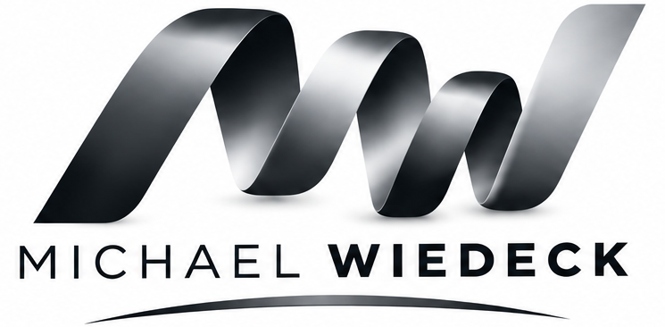
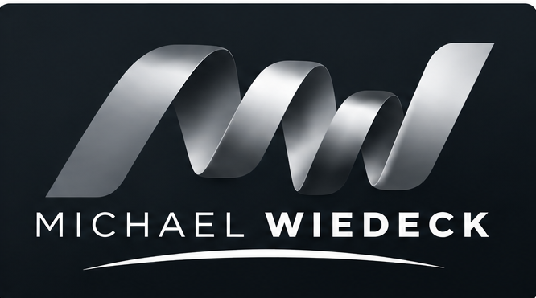
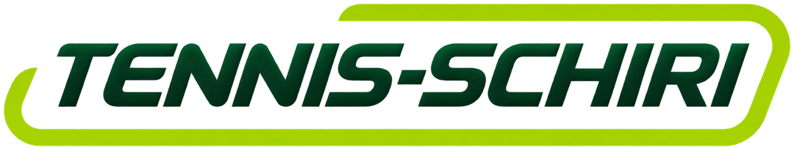
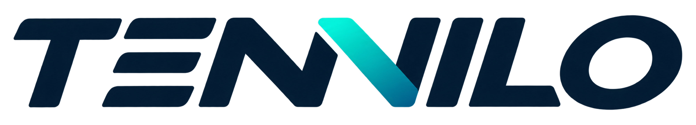
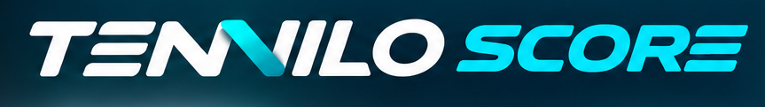
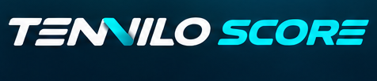
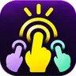

Eine persönliche Seite
Persönlich.
Digital.
Kein großes Portfolio. Ein kleiner Wegweiser zu den Dingen, an denen ich arbeite – und zu den Orten, an denen man mich findet.
WEITER ZU MEINEN PROJEKTEN01 / Projekte
Was ich mache.
Vier Projekte – von Tennis und Turnierorganisation bis zur kleinen App für zwischendurch.
01


Turniere & Regelwissen Turniere organisieren, begleiten und sicher durchführen. Tennis-Schiri bündelt Turnierleitung, Oberschiedsrichter-Einsätze und Angebote für Tennisvereine. Dazu gehören Regelwissen, Regelworkshops und aktuelle Turniertermine. 02
Turnier-Software · In Entwicklung Weniger Verwaltungsaufwand bei Vereinsturnieren. TENNILO entsteht als Web-App für Auslosungen, Spielpläne, Ergebnisse und Live-Ansichten – unter anderem für Schleifchen- und Doppelturniere. Der Start ist für 2027 geplant. 03

Tennis-Zähl-App · In Entwicklung Punkte zählen, ohne den Spielstand aus dem Blick zu verlieren. TENNILO Score entsteht als eigenständige Zähl-App für die Apple Watch und das Smartphone. Der Fokus liegt auf einer einfachen Bedienung direkt auf dem Platz, einschließlich Spiel-, Satz- und Aufschlaganzeige für Einzel und Doppel. Aktuell als interaktiver Prototyp.
04

Wer muss?!Spaß-App · In Entwicklung Wer zahlt? Wer holt die Getränke? Wer ist diesmal dran? Mehrere Personen legen gleichzeitig einen Finger auf das Display. Nach einem kurzen Countdown entscheidet der Zufall, wen es trifft. Eine kleine, augenzwinkernde App für iPhone und Android – aktuell in Entwicklung.
Auch
anderswo.
Kurze Wege statt langer Texte. Hier geht’s zu meinen Profilen und den Kanälen der Projekte.